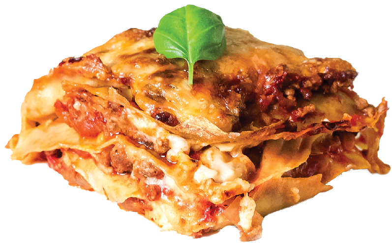

Lasagna

Background
This recipe is the most authentic recipe that has ever existed. The sauce
so brilliant and packed with flavor, the cheese so melty and creamy, the
noodles, the basil. It is a classic.
Recipe
Ingredients
- 2 28 oz. cans whole tomatoes
- Ricotta cheese
- Lasagna noodles
- Basil
- Mushrooms
- Zucchini
Directions
- Preheat oven to 350F.
-
Cook veggies and tomatoes, breaking down the tomatoes into small chunks
in a medium saucepan. Add basil and let simmer.
-
In 9x13 in. baking pan, arrange layers of tomato sauce, noodles, and
cheese until the pan is full.
-
Cover baking pan with tin foil and bake for 25-30 minutes until sauce is
bubbling and cheese is slightly browed.
-
Let sit for at least 10 minutes, then cut and serve with a basil
garnish.